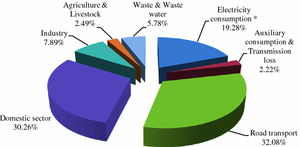
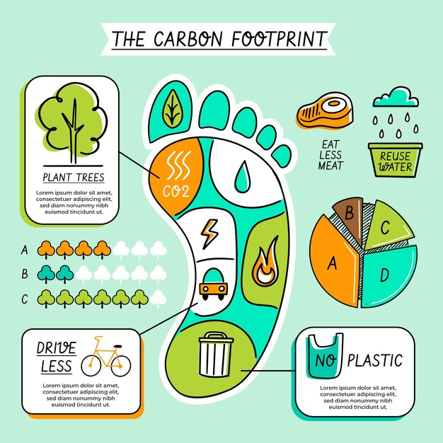

What is carbon footprint?
A carbon footprint is the total amount of greenhouse gases (including carbon dioxide and methane) that are generated by our actions. ... To have the best chance of avoiding a 2℃ rise in global temperatures, the average global carbon footprint per year needs to drop to under 2 tons by 2050.
India is the third largest emitter of carbon dioxide (CO2) after China and the US. With its rapidly growing population and an economy heavily dependent on coal and oil, its emissions are on a steep upward trajectory unless action is taken to curb them.
Effects of carbon footprint
How does carbon footprint affect the environment?
Carbon emissions affect the planet significantly, as they are the greenhouse gas with the highest levels of emissions in the atmosphere. This, of course, causes global warming and ultimately, climate change. ... This warming causes extreme weather events like tropical storms, wildfires, severe droughts and heat waves.
How does carbon footprint affect humans?
Carbon emissions directly affect humans, too, causing more respiratory disease from an increase of smog and air pollution. Not to mention that if carbon emissions eradicate certain animal species, destroy crop yields and lands, humans will also see the repercussions of those effects as well.
Causes of carbon footprint

The major contributors of carbon footprint are:food,consumption,transportation and household energy.Food is a major contributor to carbon footprint and meat in particular is an issue.Livestock is responsible for a significent amount of greenhouse gas emmision.
Ways to reduce carbon footprint.

*Avoid mass market,throw away fashion.
*Reduce your meat and dairy consumtion.
*Reduce single use plastic.
*Reduce and rethink your transportation.
*Switch to green energy.
*Learn the 5 R`s: refuse,reduce,reuse,rot,recyle.
*Using of smart lighting.
*Take 0v challange to reduce your electricit bill.
*Consider shifting to renewable energy resources.
*Consume local food.
Calculation of family average carbon footprint.
Below is the link provided for calculation,Click on the link to know our carbon footprint status.